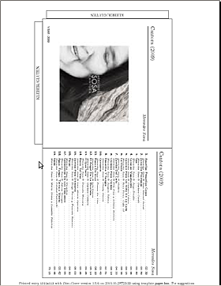

Brennprogramme
Zum Verständnis dieses Artikels sind folgende Seiten hilfreich:
Unter Ubuntu können prinzipiell alle Daten und Formate auf optische Datenträger geschrieben werden, die in der Computerwelt verfügbar sind. Neben einfachen Programmen sind auch Brennprogramme verfügbar, die fortgeschrittenen Ansprüchen genügen. Dabei muss zwischen CDs/DVDs mit Daten und Audio-CDs unterschieden werden.
Um eine Audio-CD beispielsweise aus MP3-Dateien zu brennen, müssen einerseits die entsprechenden Codecs installiert sein und zum anderen zwingend beachtet werden, dass eine Audio-CD etwas komplett anderes als eine Daten-CD ist. Während ein Computer sowohl mit Audio- als auch Daten-CDs umgehen kann, erfordern reine Audio-CD-Spieler das Brennen im Format CD-DA. Auch wiederbespielbare CDs (CD-RW) können bei Audio-CDs für Probleme sorgen. Aus Kompatibilitätsgründen sollten besser CD-R-Rohlinge verwendet werden.
Alle hier aufgeführten Programme mit grafischer Oberfläche können Audio-CDs erstellen. Bei den Kommandozeilenprogramme cdrecord, wodim und cdrskin wählt man das Format CD-DA mit der Option -audio.
Mit grafischer Oberfläche¶
Brasero¶
Brasero ist das Standard-CD/DVD-Brennprogramm für die GNOME-Desktop-Umgebung. Es ist einfach und funktional zugleich, so dass es Benutzern möglich ist, Datenträger schnell und einfach zu erstellen. Auch Xubuntu enthielt früher in der Standardinstallation Brasero, ab Ubuntu 10.10 wird stattdessen Xfburn verwendet.
Falls Brasero – in neueren Ubuntu-Versionen – fehlt, muss man es zuerst installieren.
K3B¶
K3b ist ein KDE-Programm zum Brennen von CDs und DVDs. Es soll dem Anwender ermöglichen, alle Aufgaben des CD- und DVD-Brennens möglichst intuitiv zu erledigen. K3b wird seit 1999 entwickelt und ist seit März 2007 bei den Versionsnummern 1.x angelangt. K3b hat im Jahr 2007 den aKademy Award  für beste KDE-Anwendung gewonnen.
für beste KDE-Anwendung gewonnen.
Simpleburn¶
Ein Programm für Puristen bietet das minimalistische Brennprogramm Simpleburn. Es beherrscht unter anderem das Brennen von Daten- und Audio-CDs/DVDs, den Umgang mit wiederbeschreibbaren Datenträgern, das Brennen von ISO-Images sowie das Anfertigen von CD/DVD-Kopien.
Kommandozeile¶
 Neben den grafischen Brennprogrammen sind auch zahlreiche Terminal-Programme verfügbar [2], die teilweise auch als Backend der grafischen Anwendungen dienen.
Neben den grafischen Brennprogrammen sind auch zahlreiche Terminal-Programme verfügbar [2], die teilweise auch als Backend der grafischen Anwendungen dienen.
cdrecord¶
cdrecord ist ein Allroundbrennprogramm für die Kommandozeile mit sehr großem Funktionsumfang. Viele der genannten Brennprogramme benutzen cdrecord und dessen Funktionen im Hintergrund. cdrecord war in der Standardinstallation bis Ubuntu 7.04 enthalten, muss inzwischen aber erst nachinstalliert werden.
wodim¶
Ab Ubuntu 7.10 wird statt cdrecord das Programm wodim eingesetzt. wodim ist nicht der "Nachfolger" von cdrecord, sondern basiert auf einer älteren Version von cdrecord. Daher sind viele der Eigenschaften und neueren Funktionen von cdrecord nicht in wodim zu finden. Unter Ubuntu verweist der Befehl cdrecord auf wodim. Dies dient der Kompatibilität von Programmen, die früher auf cdrecord zugriffen.
Hinweis:
Wer Blu-Rays brennen möchte, muss growisofs, cdrecord, cdrskin oder xorriso einsetzen, da das mit wodim nicht möglich ist! Auch für DVDs ist wodim nicht die erste Wahl.
cdrskin¶
cdrskin wird von den Entwicklern als "Emulator für cdrecord" beschrieben. Es stützt sich auf libburn und bietet viele der Optionen von cdrecord und wodim. Für CDs, DVDs und BDs (Blu-ray) geeignet.
Die Installation erfolgt über das Paket:
cdrskin (universe)
 mit apturl
mit apturl
Paketliste zum Kopieren:
sudo apt-get install cdrskin
sudo aptitude install cdrskin
Beispiele:
ISO-Abbilddatei brennen:
cdrskin -v dev=/dev/sr0 blank=as_needed -eject ABBILDDATEI.iso
Audio-CD erstellen:
cdrskin -v dev=/dev/sr0 blank=as_needed -audio -eject LIED_1.wav LIED_2.wav LIED_3.wav LIED_4.wav
burn¶
burn ist ein Python-Skript, welches das Brennen von Daten auf der Kommandozeile vereinfachen soll. Man kann mit ihm relativ leicht .mp3-, .ogg- oder .wav-Dateien als Audio-CD brennen, Daten auf CD sichern oder CDs direkt kopieren. Das Programm wird über das folgende Paket installiert [1]:
burn (universe)
mit apturl
Paketliste zum Kopieren:
sudo apt-get install burn
sudo aptitude install burn
Anschließend kann man mit dem Befehl
burn -e
eine längere Liste mit Beispielen abrufen:
burn -D -p /etc/ ## Brennt eine Daten-CD mit allen Daten aus /etc burn -I -n image.iso ## Brennt die Datei image.iso als ISO-Image burn -A -a *.mp3 file.ogg track01.wav ## Brennt die genannten Daten als Audio-CDs
Anhand dieser Beispiele sollte man sich zurechtfinden können.
growisofs¶
Um Daten auf DVD- oder BD-Rohlinge zu schreiben, eignet sich growisofs aus dem Paket dvd+rw-tools. Um eine Imagedatei auf DVD-Rohling zu brennen, verwendet man folgende Syntax [2]:
growisofs --dvd-compat -Z /dev/dvdrw=ABBILDDATEI.iso
xorriso¶
xorriso bearbeitet ISO-9660-Dateisysteme direkt auf CD, DVD und BD. Basiert auf libburn.
xorriso
mit apturl
Paketliste zum Kopieren:
sudo apt-get install xorriso
sudo aptitude install xorriso
Beispiel:
Datensicherung mit Ausschluss bestimmter Dateien und Ordner:
xorriso -outdev /dev/sr0 \ -blank as_needed \ -map /home/BENUTZERNAME/toene /toene \ -map /home/BENUTZERNAME/Bilder /bilder \ -rm_r /toene/unanstaendig '/bilder/*privat*' /bilder/geheim -- -commit_eject all
xorriso lässt sich alternativ mit cdrecord-artigen Optionen steuern, beherrscht aber keine Audio-CDs:
ISO-Abbilddatei brennen:
xorriso -as cdrecord -v dev=/dev/sr0 blank=as_needed -eject ABBILDDATEI.iso
Lightscribe¶
LightScribe ist ein von Hewlett-Packard und Lite-On entwickeltes Verfahren zum optischen Beschriften eines speziellen CD- oder DVD-Rohlings. Unter Linux ist ein eigener Treiber erforderlich, um diese Funktion nutzen zu können. Zur praktischen Anwendung stehen drei Programme zur Verfügung, die zum Beschriften von Lightscribe-fähigen Medien verwendet werden können.
Während Simple Labeler nur Textbeschriftungen beherrscht, kann der LaCie LightScribe Labeler für Linux (4L) wiederum nur mit grafischen Elementen umgehen. Die Open-Source-Alternative Qt lightScribe (qlscribe) hebt diese Trennung auf, was viel Zeit sparen kann, wenn zur Gestaltung nicht mehr zwei verschiedene Programme eingesetzt werden müssen und damit auch zwei Durchläufe pro Datenträger erforderlich sind.
CD-/DVD Hüllen¶
|  |
| Paperbox (mit disc-cover erstellt) |
Folgende Programme können zum Erstellen/Drucken von Covern verwendet werden:
DiscWrapper - umfangreiches Programm speziell zur Cover-Erstellung
gLabels - u.a. Erstellen von Booklets für CD- und DVD-Verpackungen
Brasero Cover Editor - nur Standard-CD-Hüllen (Jewelcase) und Tracklisten (keine Slimcase)
kover - Cover-Erstellung unter KDE
Koverartist
- älteres KDE-Programm (in den Paketquellen enthalten)disc-cover - Befehlszeilenprogramm zur Erstellung von Covern mit LaTeX und CDDB-Abfrage
Skripte/CoverCreator - einfaches Shellskript zur Cover-Erstellung
Daneben gibt es noch entsprechende CD-/DVD-Cover-Vorlagen für LibreOffice/Apache OpenOffice:

Abschließend sei noch auf die Kommandozeilenlösung cdlabelgen hingewiesen. Mehr Informationen sind der Manpage zu cdlabelgen zu entnehmen. Auf Wunsch kann man cdlabelgen auch mit der grafischen, auf Python basierenden Oberfläche gtkcdlabel kombinieren.
Informationen & Benchmark¶
QPxTool¶
QPxTool zeigt Informationen zu den unterstützen Medienformaten des CD/DVD-Laufwerks und des eingelegten Mediums an und ist damit vergleichbar mit Neros InfoTool für Windows. Außerdem lässt sich die Schreib- bzw. Lesegeschwindigkeit der eingelegten Medien testen. Unterstützte Geräte und Informationen zu den verschiedenen Benchmarks finden sich auf der Homepage QPxTool .
qpxtool (universe)
mit apturl
Paketliste zum Kopieren:
sudo apt-get install qpxtool
sudo aptitude install qpxtool
Links¶
CD-/DVD-Burning
- Ubuntu-WikiMultiCD - eine Multiboot-CD erstellen
Der Ubuntu-Cover Sammelthread mit Vorlagen zum Bedrucken von CD-/DVD-Hüllen und Rohlingen
Optical disc drive
- viele Informationen rund um optische Datenträger
- Erstellt mit Inyoka
-
 2004 – 2017 ubuntuusers.de • Einige Rechte vorbehalten
2004 – 2017 ubuntuusers.de • Einige Rechte vorbehalten
Lizenz • Kontakt • Datenschutz • Impressum • Serverstatus -
Serverhousing gespendet von